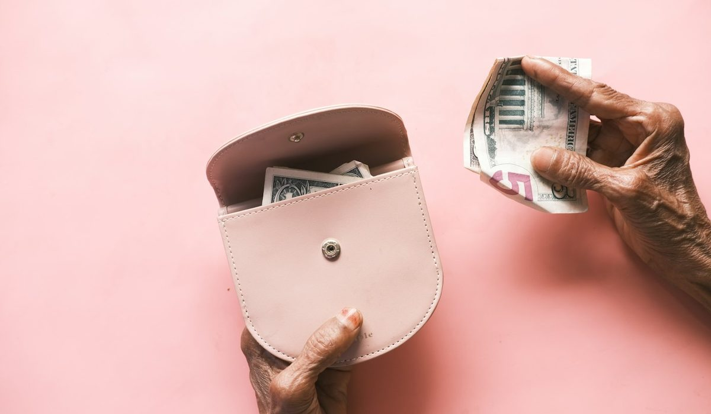

En bref
L'usage le plus répandu conseille une épargne de précaution de 3 à 6 mois de dépenses courantes, soit de 3 900 à 7 800 € pour un foyer qui dépense 1 300 € par mois. C'est une recommandation usuelle, pas une règle officielle, aucun texte ne la fixe. L'endroit logique pour la placer est le Livret A, rémunéré 1,7 % depuis le 1er août 2026 et plafonné à 22 950 €, complété par le LDDS au même taux ou par le LEP à 2,5 % si vos revenus y donnent droit.
- La fourchette de 3 à 6 mois de dépenses est une recommandation de la presse et des conseillers, aucune source officielle ne la fixe.
- Le Livret A et le LDDS rapportent 1,7 % depuis le 1er août 2026, contre 1,5 % auparavant.
- Le plafond du Livret A est de 22 950 € pour un particulier, hors intérêts capitalisés.
- Le LEP rapporte 2,5 %, mais il est réservé aux foyers dont le revenu fiscal reste sous un plafond.
- 5 000 € placés sur un Livret A à 1,7 % rapportent 85 € sur une année pleine, sans impôt ni prélèvements sociaux.
Sommaire de ce guide
À quoi sert une épargne de précaution
Une épargne de précaution n'est pas un placement. C'est une assurance que l'on se paie à soi-même. Elle existe pour qu'une panne de voiture, une facture de dentiste ou un mois sans revenu ne se transforme pas en découvert, en crédit renouvelable ou en appel gêné à la famille.
Elle obéit donc à trois exigences qui n'ont rien à voir avec le rendement. L'argent doit être disponible en un ou deux jours, sans pénalité. Il ne doit jamais perdre de valeur nominale, même quand les marchés chutent. Et il doit être séparé du compte courant, faute de quoi il finit dans les courses du mois.
Tout le reste vient après. On ne construit pas un projet immobilier ni un plan d'épargne retraite tant que ce coussin n'existe pas, parce que le premier imprévu forcerait à casser le projet au pire moment.
La règle des 3 à 6 mois, d'où elle vient
Vous l'avez forcément lue quelque part. Il faudrait garder de côté 3 à 6 mois de dépenses. Soyons précis, cette fourchette est une recommandation usuelle de la presse financière et des conseillers, pas une règle officielle. Ni la Banque de France, ni le ministère de l'Économie, ni aucun texte ne fixe de montant d'épargne de précaution.
La fourchette a pourtant une logique. Trois mois couvrent la plupart des coups durs ponctuels, une grosse réparation ou un mois de salaire décalé. Six mois couvrent un délai de retour à l'emploi ou une baisse d'activité durable. Entre les deux, chacun place le curseur selon la stabilité de ses revenus.
Le bon montant n'est pas celui qui rassure en théorie. C'est celui qui vous éviterait d'emprunter si votre revenu s'arrêtait demain.
Un détail change tout. On parle de mois de dépenses, pas de mois de salaire. Un foyer qui gagne 2 000 € et en dépense 1 300 € vise 3 900 à 7 800 €, pas 6 000 à 12 000 €. Calculer sur les dépenses rend l'objectif plus accessible et plus juste.
Combien selon votre situation
Le tableau applique la fourchette à huit profils types. Les dépenses mensuelles sont des ordres de grandeur, à remplacer par les vôtres. Le principe reste le même, plus votre revenu est fragile ou unique, plus vous montez vers six mois.
| Situation | Montant | Mois de dépenses | Dépenses mensuelles | Où le placer | Pourquoi ce niveau |
|---|---|---|---|---|---|
| Salarié en CDI, seul, locataire | 3 870 à 5 160 € | 3 à 4 mois | 1 290 € | Livret A | Revenu stable, peu de gros imprévus |
| Couple, deux salaires en CDI | 6 240 à 8 320 € | 3 à 4 mois | 2 080 € | Livret A et LDDS | Deux revenus rarement perdus en même temps |
| Parent seul avec un enfant | 7 050 à 8 460 € | 5 à 6 mois | 1 410 € | Livret A, LEP si éligible | Un seul revenu et des dépenses peu compressibles |
| Intérimaire ou salarié en CDD | 6 650 à 7 980 € | 5 à 6 mois | 1 330 € | Livret A, LEP si éligible | Des fins de mission sans préavis |
| Micro-entrepreneur ou indépendant | 8 820 € et plus | 6 mois et plus | 1 470 € | Livret A et LDDS | Chiffre d'affaires irrégulier, pas d'assurance chômage classique |
| Propriétaire de sa résidence principale | 5 440 à 8 160 € | 4 à 6 mois | 1 360 € | Livret A et LDDS | Toiture, chaudière, dégât des eaux |
| Retraité | 3 540 à 4 720 € | 3 à 4 mois | 1 180 € | Livret A, LEP si éligible | Pension régulière, frais de santé à anticiper |
| Étudiant ou premier emploi | 940 à 1 880 € | 1 à 2 mois | 940 € | Livret A | Premier palier avant de viser 3 mois |
Dépenses mensuelles courantes hors épargne, par profil type. Fourchettes observées, relevé de démonstration de la rédaction, octobre 2026.
Deux profils se distinguent nettement. L'indépendant d'abord, dont le chiffre d'affaires peut chuter sans préavis et qui ne bénéficie pas de l'assurance chômage d'un salarié. Six mois sont un plancher pour lui, pas un plafond. Le parent seul ensuite, parce qu'un seul revenu supporte des dépenses qu'on ne peut pas réduire, loyer, garde, cantine.
À l'inverse, un retraité dont la pension tombe chaque mois peut se contenter de trois mois, à condition d'anticiper les frais de santé et l'aide à domicile, qui pèsent souvent plus qu'on ne l'imagine.
Où placer cette épargne
Pour de l'argent qui doit rester disponible et intact, les livrets réglementés sont la réponse évidente. Leurs taux sont fixés par les pouvoirs publics, leurs intérêts sont exonérés d'impôt sur le revenu et de prélèvements sociaux, et l'argent se retire à tout moment sans frais.
| Livret | Taux | Plafond | Pour qui |
|---|---|---|---|
| Livret A | 1,7 % | 22 950 € | Tout le monde, un seul par personne |
| LDDS | 1,7 % | 12 000 € | Tout contribuable domicilié en France, un seul par personne |
| LEP | 2,5 % | 10 000 € | Foyers dont le revenu fiscal reste sous un plafond |
Taux en vigueur depuis le 1er août 2026. Intérêts exonérés d'impôt sur le revenu et de prélèvements sociaux.
Le Livret A suffit à la plupart des foyers. Son plafond de 22 950 € couvre largement six mois de dépenses pour une personne seule. À 1,7 %, 5 000 € rapportent 85 € sur une année pleine. Ce n'est pas un rendement spectaculaire, mais ce n'est pas son rôle. Les intérêts se calculent par quinzaine, il vaut donc mieux verser en début de quinzaine et retirer en fin de quinzaine.
Le LEP mérite une vérification si vos revenus sont modestes. À 2,5 %, il rapporte nettement plus que le Livret A pour la même sécurité. Beaucoup de foyers éligibles n'en ont pas, faute d'avoir posé la question à leur banque avec leur dernier avis d'imposition.

Ce qu'il faut éviter pour cette somme précise, ce sont les supports dont la valeur fluctue ou qui bloquent l'argent. Actions, fonds en unités de compte, épargne retraite, cryptomonnaies. Tous peuvent avoir leur place dans un patrimoine, aucun n'a sa place dans une réserve d'urgence.
Comment la constituer avec un petit budget
Réunir 4 000 € quand on finit le mois à 50 € près paraît hors de portée. Ça ne l'est pas, à condition de procéder par paliers et de ne jamais compter sur la fin du mois.
- Fixez un premier objectif de 500 €, qui couvre déjà la plupart des petites pannes et des franchises d'assurance.
- Programmez un virement automatique vers un livret le lendemain de la paie, même de 25 ou 30 €.
- Versez directement sur le livret chaque rentrée exceptionnelle, prime, remboursement, régularisation d'impôt.
- Une fois un mois de dépenses atteint, relevez le virement automatique de quelques euros.
- Quand vous puisez dans la réserve, reconstituez-la en priorité avant tout nouvel achat non urgent.
À 40 € par mois, il faut un an pour atteindre près de 500 €. À 80 €, trois ans et demi pour dépasser 3 000 €. C'est lent, et c'est normal. La régularité compte plus que le montant, et le virement automatique est la seule technique qui résiste vraiment aux mois difficiles.
Si votre budget ne dégage aucune marge, le problème est en amont. Notre guide du budget mensuel avec un petit salaire détaille comment retrouver quelques dizaines d'euros par mois sur les postes fixes et les frais bancaires.
Que faire selon votre profil
Si vous n'avez encore rien de côté
Visez 500 €, puis un mois de dépenses. N'essayez pas d'atteindre six mois en même temps que vous remboursez un découvert. Sortez d'abord du découvert, qui coûte bien plus cher que ce que rapporte un livret.
Si vous êtes indépendant
Séparez trois réserves. Celle pour les cotisations et l'impôt à venir, qui ne vous appartient pas vraiment, celle de précaution personnelle, d'au moins six mois, et éventuellement une trésorerie pour l'activité. Les mélanger est la cause la plus fréquente des mauvaises surprises de fin d'année.
Si votre réserve dépasse le plafond du Livret A
Complétez avec le LDDS, puis le LEP si vous y avez droit. Au-delà de six mois de dépenses, l'argent supplémentaire n'est plus de la précaution. Il peut être placé sur un horizon plus long, selon vos projets.
Si vous vivez en couple
Chacun peut détenir son propre Livret A et son propre LDDS, ce qui double les plafonds disponibles. Calculez la réserve sur les dépenses communes du foyer et décidez à l'avance qui alimente quoi, au prorata des revenus de préférence.
Notre verdict
Mettez de côté 3 à 6 mois de dépenses courantes, en sachant que cette fourchette est une recommandation usuelle et non une règle officielle. Trois mois suffisent avec un revenu stable, six mois ou plus s'imposent avec un revenu unique ou irrégulier. Placez cette somme sur le Livret A à 1,7 %, plafonné à 22 950 €, et sur le LEP à 2,5 % si vos revenus y donnent droit.
Si vous partez de zéro, visez d'abord 500 € avec un virement automatique le lendemain de la paie. Si vous êtes indépendant, séparez la réserve personnelle de l'argent dû aux cotisations. Si vous dépassez six mois de dépenses, le surplus n'est plus de la précaution et peut aller vers des projets de long terme.
Questions fréquentes
Combien faut-il avoir en épargne de précaution ?
La recommandation la plus répandue est de garder de 3 à 6 mois de dépenses courantes, soit de 3 900 à 7 800 € pour un foyer qui dépense 1 300 € par mois. Aucun texte officiel ne fixe ce montant. Trois mois suffisent avec un revenu stable, six mois sont préférables pour un indépendant ou un parent seul.
La règle des 3 à 6 mois d'épargne est-elle officielle ?
Non. La fourchette de 3 à 6 mois de dépenses est une recommandation usuelle de la presse et des conseillers financiers. Ni la Banque de France ni le ministère de l'Économie ne fixent de montant d'épargne de précaution.
Quel est le taux du Livret A en 2026 ?
Le Livret A est rémunéré 1,7 % depuis le 1er août 2026, contre 1,5 % auparavant. Son plafond est de 22 950 € pour un particulier, hors intérêts capitalisés. Le LDDS est au même taux de 1,7 % et le LEP à 2,5 %.
Où placer son épargne de précaution ?
Sur un livret réglementé disponible à tout moment, en priorité le Livret A à 1,7 %, puis le LDDS au même taux. Si vos revenus sont modestes, le LEP à 2,5 % rapporte davantage. Les actions, l'épargne retraite et les cryptomonnaies ne conviennent pas à cette réserve.
Combien rapportent 5 000 € sur un Livret A ?
Au taux de 1,7 % en vigueur depuis le 1er août 2026, 5 000 € placés une année pleine sur un Livret A rapportent 85 €. Ces intérêts sont exonérés d'impôt sur le revenu et de prélèvements sociaux. Ils se calculent par quinzaine.
Faut-il épargner avant de rembourser un découvert ?
Non, sauf pour constituer un tout petit matelas de quelques centaines d'euros. Un découvert coûte en agios et en commissions bien plus que ce que rapporte un Livret A à 1,7 %. Mieux vaut sortir du découvert d'abord, puis construire l'épargne de précaution par paliers.
Notre méthode
Ce comparatif repose sur des données publiques, vérifiables une par une, et sur des critères affichés avant le classement.
- Les tarifs sont relevés dans les plaquettes tarifaires et les pages officielles des établissements, frais de tenue de compte et de carte compris
- Les conditions d'ouverture (revenus, âge, justificatifs, délai) sont vérifiées sur le parcours d'ouverture de chaque offre
- Les plafonds réglementaires (frais d'incident, offre clientèle fragile, droit au compte) sont ceux publiés par la Banque de France et service-public.fr
- Les avis clients sont lus sur les stores d'applications et Trustpilot, en retenant les motifs récurrents plutôt que la note seule
- Chaque critère est noté sur 10 et la grille de notation est identique d'un comparatif à l'autre